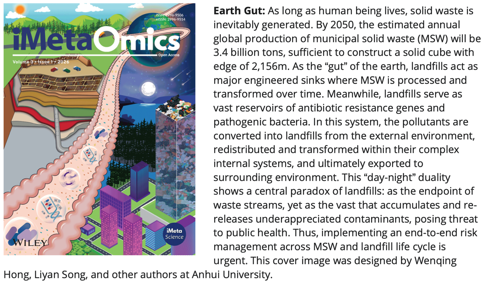
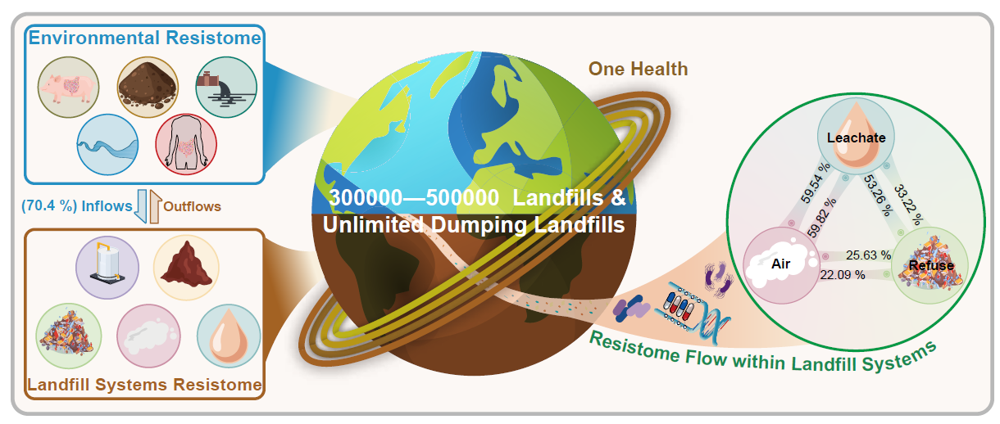

课题组关于全球填埋场系统抗性组流动特征的工作被 iMetaOmics 录用
课题组以 “Resistome flow in global landfill systems” 为题发表研究成果，构建了目前针对人类城市垃圾填埋场系统最全面的抗性组数据集之一。

研究整合了 161 份宏基因组样本，其中 43 份来自本实验室、118 份来自公共数据库，覆盖 7 个国家的 21 座城市，构成了目前评估人类城市垃圾填埋场系统 ARGs 最全面的数据集。
研究团队系统绘制了抗性组在填埋场中的流动路径，包括外源土壤、废水、淡水以及人和猪肠道流入，填埋场内部垃圾-渗滤液-气溶胶的交互传播，以及渗滤液、气体排放和垃圾开采向环境的外流过程。

该成果强调了垃圾填埋系统中抗性组的产生和流动规律，为生活垃圾全生命周期管理提供了新的科学依据，并从“地球肠道”的视角诠释了填埋场陆生生态系统的生态过程和功能。